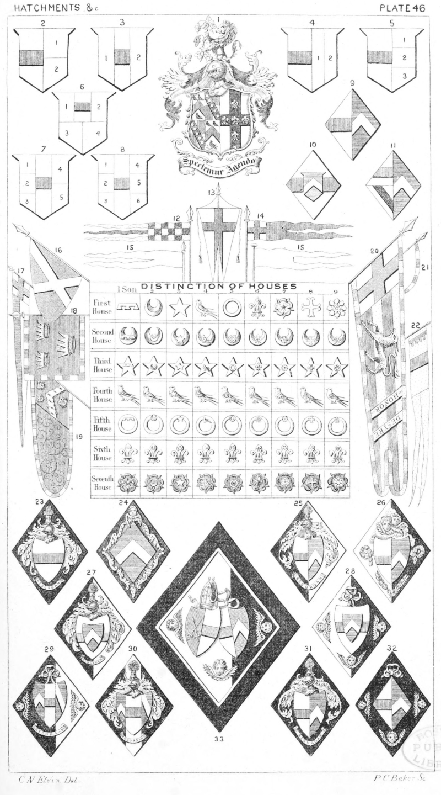

Plate 46.

Plate 46.
- Man and Wife ; Baron and Femme.
The Husbands arms are quarterly,
Impaling a single coat.
When a man marries a second
wife the alliance can be shown
in three different ways. The Fesse
in the engraved examples shewing
the position of the man's arms and
the Numerals those of the wives.
See term Marshalling
- Man and Two Wives
- Man and Two Wives
- Man and Two Wives
- Man and Three Wives
- Man and Four Wives
- Man and Five Wives
- Man and Six Wives
- A Widow
When a Widow marries a second
time, her husband impales her
paternal arms. If a Peer marries
an untitled lady and he die leaving
lier a widow, and she marry for
her second husband an untitled
gentleman, there is an absurd
fashion of bearing the Heraldic
Insignia the same as if she was a
Peeress in her own right
- Widow being an Heiress or Co-Heiress
- A Woman having had two husbands
- Pennon of Waleran de Bellomont
Earl of Worcester, 1144
- Gonfanon
- Pennon as in the Crest of the Duke
of Wellington
- Pennoncell's
- Triangular Pennon of Ralf Lord
Neville, 1386
- Pennon
- Banner
- Pennon
- Standard of Hastings of Rising co.
Norfolk
- Guidon
- Pennon of De Quincey Earl of
Winchester, who died 1219
Funeral Achievements.
Commonly called Hatchments.
(See Funeral Achievements.)
The engravings, except No. 33, are
without the frames
- Bachelor
- Maid
- Husband dead, wife surviving
- Wife dead, Husband surviving
- Husband dead, wife an Heiress surviving
- Wife an Heiress dead. Husband
surviving
- Husband and first wife dead, second
surviving
- Both Wives dead, Husband surviving
- Widower
- Widow
- A Bishop, his Wife dead
Distinction of Houses.
Marks of Cadency or of Filiation,
also termed Brisures, are charges
placed in the shield to express tiic
differences of descent, e.g. The
distinction of the eldest son of the
second House is a crescent charged
with a label. The eldest son of
the third House, a mullet, charged
with a label, etc. See also Plate
16, f. 40 to 45, and P. 23a. f.
1 and 2.